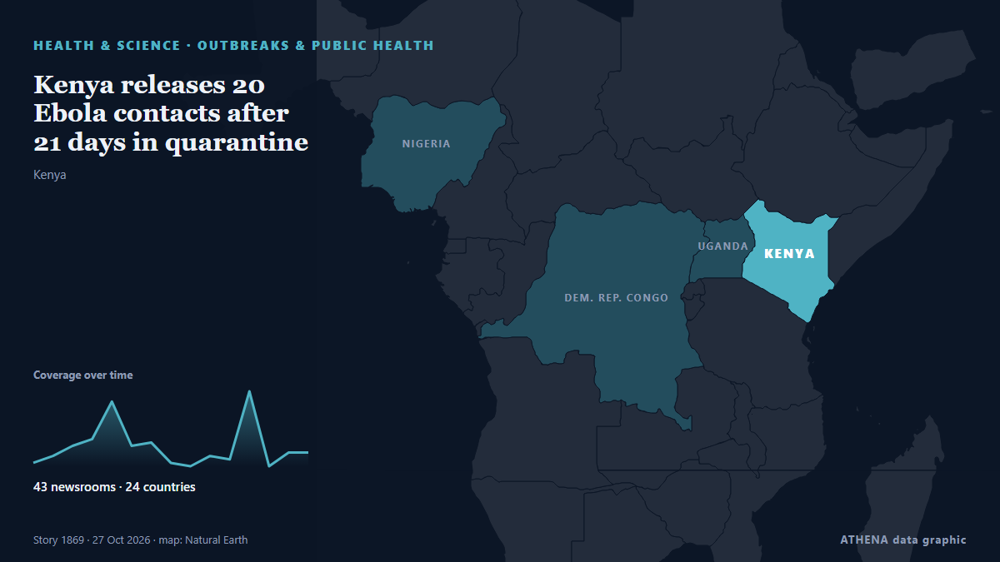

Sub-Saharan Africa
Sub-Saharan Africa: the latest events country by country, ranked by ATHENA with risk, sources and countries.

Health & ScienceKenya releases 20 Ebola contacts after 21 days in quarantine
Kenya has declared Bundibugyo Ebola a formidable epidemic disease, introducing new rules on screening, isolation, quarantine, contact tracing and safe burials to strengthen outbreak control measures. from The Standard
Congo-Kinshasa: Cases Top 10,000 in DR Congo Ebola Outbreak
[DW] DR Congo has reported more than 10,000 Ebola cases and nearly 4,900 deaths. from AllAfrica
Voting ends in South Africa's hotly contested local elections
Special voting gets underway on Monday and will continue on Tuesday. from SABC News
Kagame Recieves New South African Envoy To Rwanda
Rwanda and South Africa have taken another step towards normalising relations after President Paul Kagame received the credentials of South Africa’s new High Commissioner to Rwanda, Tinyiko George… from KT Press
Poland's president returns as court crisis escalates
Polish President Karol Nawrocki turned back to Poland while en route to Senegal after a far-right ally was suspended as head of the country's top court. from RTÉ News
Nigeria beat Brazil to reach first-ever women U-17 World Cup final
Nigeria have advanced into the final of the Under-17 Women’s World Cup for the first time ever. from Daily Trust
Dakar 2026 Youth Olympics opens in historic first for Africa
A Namibian team of 12 athletes will represent the nation at the first ever Youth Olympic Games in Africa, which kick off in Dakar, Senegal, tomorrow. from The Namibian